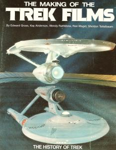
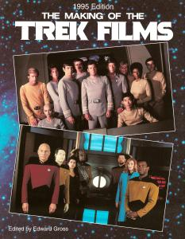

The Making of the Trek Films |
|  |
|  |
| AUT | Edward Gross Kay Anderson Wendy Rathbone Ron Magid Sheldon Teitelbaum |
| PAG | 172 160 (edizione 1995) |
| EDI | Image Publishing, 1991 Image Publishing, 1995 (edizione 1995) |
| ISBN | 0-9627508-1-9 0-9627508-2-4 (edizione 1995) |
Making dei primi sei film con interviste al cast e al personale che ha lavorato alla produzione.
L'edizione del 1995 arriva fino a Generations.